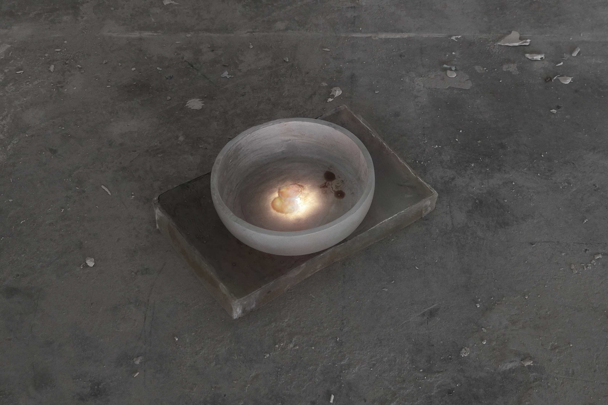

Artwork
Blue Afterimage
- Year2025
- MediumMixed media on paper
- Dimensions42 x 59 cm
A work on paper exploring residual colour and the sensation of looking after the image has disappeared.

Artwork
A work on paper exploring residual colour and the sensation of looking after the image has disappeared.